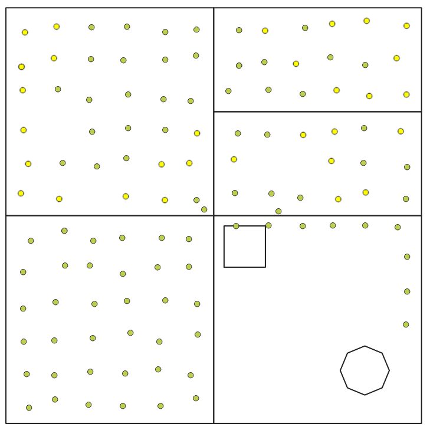
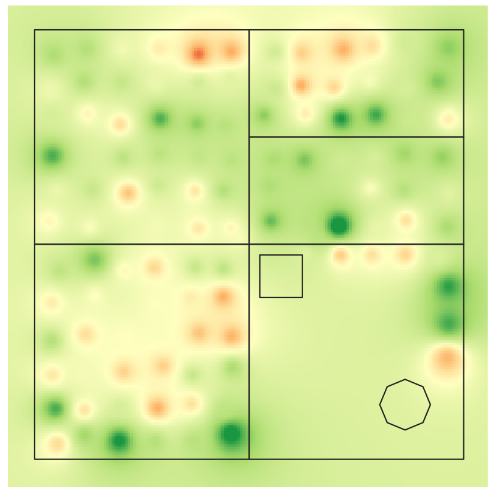
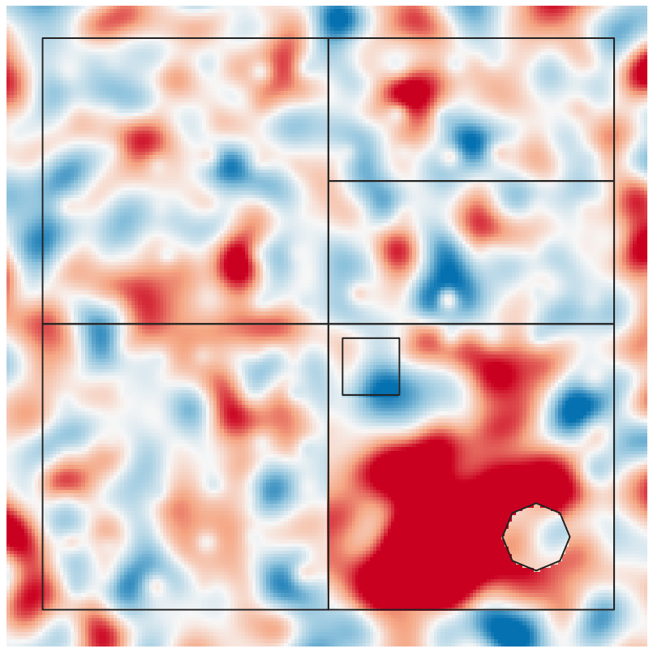

Lab 05 · November 2026
Whether a Field Can Grow Corn
The question
Whether the soil parameters of a field unused since 2019 are suitable for growing corn?
The data
Data used in this lab was provided by my instructor. The vector layer illustrates the boundary of the field, and the other point layer shows the sample points of soil parameters. Fields of the sample points include fid, sample_id, field, batch, lab, pH, P, K. The soil samples have 2 batches in total and the analysis of soil parameters of these 2 batches were done by different labs. The two labs used different units for the filed "P", which is the concentrattion of phosphorus in the soil. Values in the original P filed have 2 magnitudes. I fixed the unit issue and stored the unified values in a new field "p_fix".
The method
We want to estimate the phosphor concentration of field 5, which is the field without sample points. I done this by inverse distance weighting (IDW). IDW estimates a value at an unsampled spot as a weighted average of the samples, giving nearer samples more weight. In QGIS, I ran the IDW interpolation tool with the the interpolation atrtibute set to "p_fix", distance coefficient set to 2 and the output raster size set to 10. Colorize the output layer with render type set to "Singleband pseudocolor" and the color ramp set to "RdYlGn". Then, compare our estimated phosphor concentration layer with the true phosphor concentration layer using the raster calculator tool and save the output as the error layer.



What I found
| Question | Answer |
|---|---|
| Q1. Two different scales are hiding in the P column. Which rows use the bigger scale? Look at the batch, lab and field columns of those rows. Write one sentence. | Rows in batch B use a bigger scale for field P. |
| Q2. How many samples suit corn using P, and using P_fix? In which fields are the extra ones? | If I filter sample points with field P, 31 points are suitable. If I use field p_fix to filter, then the number is 46. |
| Q3. Write both distances. You should get roughly 340 m for Field 5 and about 130 m for Field 1. Before you go on, write one sentence predicting where a map built from these samples will be least trustworthy. | We know that near things are more related than distant things. So the map in field 5 is going to be least trustworthy because it's built from points far away. |
| Q4. Does any of the three powers show a phosphorus problem (red) inside Field 5? | No, none of the three distance powers indicate a phosphorus problem in field 5. |
What this does not show
Problem of this map mainly lies in Field 5, the southeastern part of the map where there is no sample point. The phosphor concentration estimation in this area is unreliable because they are generated from sample points that are far away. Map 3 validates this problem, the estimation overestimates the true phosphor concentration of a great proportion of land in Field 5.
AI use: AI-assisted for html coding, using Claude Code. I verified it by opening the page on a phone and a laptop and confirming no external resources were added. The measurements, the tables and the interpretations are my own.